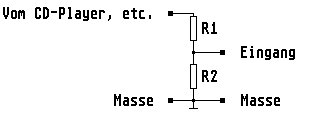

Previous
Next
TOC
Dynamiktabelle fÅE digitalisierte Analogsignale
Die Dynamik (Signal Rausch Abstand) eines Signales, das unter idealen
Bedingungen durch Digitalisieren und RÅEkanalogisieren aus einem Ana-
logsignal entstanden ist, h‰ngt von der Anzahl der Bits ab mit der
das Signal abgetastet oder aufgelˆst wird.
Der Zusammenhang zwischen Bitzahl, Auflˆsung (kleinste Stufe) und
Dynamik (in dB) sind in der untenstehenden Tabelle aufgefÅErt.
Bit
Auflˆsung
Dynamik (in dB)
---------------------------------------
3
8
18
4
16
24
5
32
30
6
64
36
7
128
42
8
256
48
9
512
54
10
1024
60
11
2048
66
12
4096
72
13
8192
78
14
16384
84
15
32768
90
16
65536
96
17
131072
102
18
262144
108
19
524288
114
20
1048576
120
Quantisierungsrauschen ist folgendes:
Wenn man ein analoges Signal mit einem A/D-Umsetzer (zum Beispiel der
Codec Chip im Falcon030) in eine Zahlendarstellung umsetzt, macht man
immer einen gewissen Fehler (genauer als die Auflˆsung geht es halt
nicht). Diesen Fehler nennt man Quantisierungsfehler.
Zuf‰llige oder scheinbar zuf‰llige Stˆranteile in analogen Signalen
nennt man allgemein Rauschen. Den Rauschanteil der durch die A/D-Um-
setzung entsteht, nennt man Quantisierungsrauschen.
Die Pegelanpassung bei unterschiedlichen Pegeln an NORM-Eing‰ngen:

Abschw‰chung
in db
R1
R2
-2,5
3,3kOhm
10kOhm
-3,3
4,7kOhm
10kOhm
-6,0
10kOhm
10kOhm
-8,9
10kOhm
5,6kOhm
-9,9
10kOhm
4,7kOhm
-12,1
10kOhm
3,3kOhm
weiterbl‰ttern
Kapitel Dynamiktabelle fÅE digitalisierte Analogsignale, Seite 1